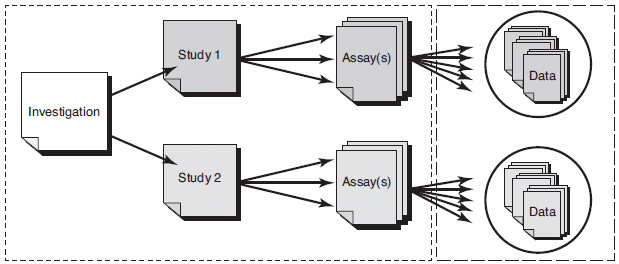

4.4.2. IMI FAIRPlus Indicators¶
version : v0.01
FAIRplus indicators are designed for measuring data sets compliance to Data Usage Areas. One indicator might support more than one Data Usage Area. Indicators are grouped according to the ISA framework.

Image Reference : Khan
4.4.2.1. Index¶
ID |
Indicators |
|---|---|
Study level documentation is available in a human readable format. |
|
Data is reported by following community specific minimum information guidelines |
|
Metadata documents and provides references about all data biological data types and formats in data is expressed. |
|
Relationships between different data sets in a study is well defined. |
|
A versioning policy is applied to uniquely identify a particular form of a dataset from an earlier form or other forms of itself. |
|
Share not only derived and publication related data but data generated in early phases of research data workflow such as primary data and analyzed data. |
|
Negative results are shared. |
|
The study is described with metadata including context, samples and data acquisition, methods for analyzing and processing data, quality control, and restriction for reuse. |
|
Metadata includes information about the study design, protocols and data collection methods. |
|
Metadata includes explicit references to research resources such as samples, cell lines |
|
Metadata contains information about data processing methods, data analysis and quality assurance metrics. |
|
Metadata includes information about data ownership, license and reuse constraints for sensitive data. |
|
Data is organized and documented in a human understandable way |
|
Data is encoded in a community specific exchange standard. |
|
A machine and human readable formal description of the structure of data is available including types, properties. |
|
Data is structured by following a life sciences domain model, core classes and their semantic relations refers to a common data model. |
|
Data is described with terminology standards. |
|
Core data classes (important data elements) follows a common master and reference data entity. |
4.4.2.1.1. Study Level¶
4.4.2.1.1.1. F+S01 : Study level documentation is available in a human readable format.¶
Description |
Study-level documentation provides high-level information on the research context and design, the data collection methods used, any data preparations and manipulations and summaries of findings based on the data. Examples and a suggested list of coverage can be found at UK Data Services. |
Related DU Area |
4.4.2.1.1.2. F+S02 : Data is reported by following community specific minimum information guidelines¶
Description |
A reporting standard ensures recording the information (metadata) required to unambiguously communicate experimental designs, treatments and analyses, to con-textualize the data generated. Such standards are also known as data content or minimum information standards (Chervitz, et all.). See examples: reporting standards for health care, for life sciences data, collection of FAIRsharing |
Related DU Area |
{kind=link}
4.4.2.1.1.3. F+S03 : Metadata documents and provides references about all data biological data types and formats in data is expressed.¶
Description |
Biological and biomedical research has been considered an especially challenging research field in this regard, as data types are extremely heterogeneous and not all have defined data standards (Griffin, et. all). Metadata should capture all data types and format names in a study, if possible provide a reference or URL for format specification, if not possible have a description. |
Related DU Area |
4.4.2.1.1.4. F+S04 : Relationships between different data sets in a study is well defined.¶
Description |
In a study there are multiple data sets which are used as input and produced as an output. When a data is FAIRified, it is important to understand which data files are generated from the analysis of which other data sets, or sample data. For example the EMBL-EBI SDRF (Sample and Data Relationship Format) describes the sample characteristics and the relationship between samples, arrays, data files. Some communities such as proteomics have adopted these file formats to their needs, see SDRF for Proteomics . Furthermore, ISA allows multiomics support and is used by EMBL-EBI Metabolights |
Related DU Area |
4.4.2.1.1.5. F+S05 : A versioning policy is applied to uniquely identify a particular form of a dataset from an earlier form or other forms of itself.¶
Description |
Versioning is tracking the changes made in data by saving new copies of data files with indicators of the changes made. A new version is created when there is a change in the structure, contents, or condition of the resource. In the case of research data, a new version of a dataset may be created when an existing dataset is reprocessed, corrected or appended with additional data. Versioned data are required to cite and identify the exact dataset used as a research input in order to support research reproducibility and trustworthiness (ANDS). |
Related DU Area |
4.4.2.1.1.8. F+S08 : The study is described with metadata including context, samples and data acquisition, methods for analyzing and processing data, quality control, and restriction for reuse.¶
Description |
This indicator can be evaluated in two phases: 1) providing a structured metadata with domain conventions; 2) providing machine readable metadata by using any common vocabularies. |
4.4.2.1.1.9. F+S08a : Metadata includes information about the study design, protocols and data collection methods.¶
Description |
Example metadata: study / experiment design, trial protocol, data acquisition methods, experiment methods, data processing methods . |
Related DU Area |
4.4.2.1.1.10. F+S08b : Metadata includes explicit references to research resources such as samples, cell lines¶
Description |
Provide information about key research materials such as antibodies, cell lines, and organisms. Preferable with identifiers, see RRID portal. |
Related DU Area |
4.4.2.1.1.11. F+S08c : Metadata contains information about data processing methods, data analysis and quality assurance metrics.¶
Description |
See specific examples for quality requirements for In Vitro research, such as chemical probes, cell line authentication, antibody validation. |
Related DU Area |
4.4.2.1.1.12. F+S08d :Metadata includes information about data ownership, license and reuse constraints for sensitive data.¶
Description |
Considering the sensitive nature of life science data, beside data reuse license, consent, and if exist any other constraints should be documented. |
Related DU Area |
4.4.2.1.2. Assays / Data Set Level:¶
4.4.2.1.2.1. F+A01 : Data is organized and documented in a human understandable way¶
Description |
Data-level, or object-level, documentation provides information at the level of variables in a database or individual objects such as images. Data-level information can be embedded in data files, such as variable, value and code labels in an SPSS file or headers in a document. Examples for quantitative, qualitative and secondary source documentation can be found at UK Data Services. |
Related DU Area |
4.4.2.1.2.2. F+A02 : Data is encoded in a community specific exchange standard.¶
Description |
A data exchange standard defined the encoding format of data. A data exchange standard delineates what data types can be encoded and the particular way they should be encoded (e.g., tab-delimited columns, XML, binary, etc. They facilitate the exchange of information between researchers and organizations, and between software programs or information storage systems. ). They provide syntax standards but do not specify what the document should contain in order to be considered complete (Chervitz, et all.). |
Related DU Area |
4.4.2.1.2.3. F+A03 : A machine and human readable formal description of the structure of data is available including types, properties.¶
Description |
A schema describes the structure of the data. Special schemes have meanings associated with databases, such as community agreed profiles. A schema consists of a key dimension and its properties, expected types, constraints, cardinalities and associated controlled vocabularies (preferably refers to existing ontologies). Schemas and profiles can be registered and reused, for examples FAIRsharing Standards and specific examples such as Schema.org, Bioschemas, or HL7 resources in the context of health data records. |
Related DU Area |
4.4.2.1.2.4. F+A04 : Data is structured by following a life sciences domain model, core classes and their semantic relations refers to a common data model.¶
Description |
Meaningful exchange of information is a fundamental challenge in life sciences research. A domain model A domain is an abstract, implementation-independent representation of the grammar, or semantics, of a domain (Freimuth, et. all) . Domain models define core classes and the semantic relationships between them, as well as providing unambiguous definitions for concepts required to describe life sciences research. Examples of life sciences common data models are OMOP, BRIDG, Lifesciences DAM, functional genomics data modelling. |
Related DU Area |
4.4.2.1.2.5. F+A05 : Data is described with terminology standards.¶
Description |
Terminology standards is typically defined by the use cases and provides control vocabularies to support and competency questions it is designed to answer. In life sciences domain ontologies are common ways to encode terminology standards (Chervitz, et all.). Terminology standards add an interpretive layer to the data by defining the concepts or terms in a domain, and in some cases the relationships between them (Tenenbaum et. all). See an example list for terminology standards. For a complete listing see the OBO Foundry. |
Related DU Area |
4.4.2.1.2.6. F+A06 : Core data classes (important data elements) follows a common master and reference data entity.¶
Description |
Master data is defined as core business objects used in different applications across an organization along with their associated metadata, definitions and taxonomies. Reference data is used to characterize or classify other data such as codes and description tables. Master and Reference data lowers cost and complexity through use of standards, common data models, and integration patterns. Sharing master data within a community or in organization reduces variability caused by multiple studies producing the same type of data, but in isolation, then inconsistencies in data structure and data values between the systems occurs (DAMA). |
Related DU Area |
4.4.2.2. Authors¶
Name |
Affiliation |
orcid |
CrediT role |
|---|---|---|---|
Oya Deniz Beyan |
Writing - Original Draft |
||
Writing - Review & Editing, Funding acquisition |